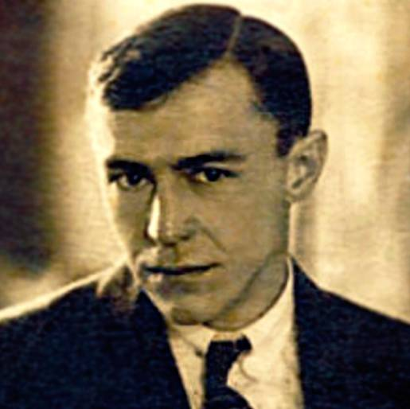

Дмитро Яворницький
Дмитро Іванович Яворницький (Єварницький)-український історик, археолог, етнограф, фольклорист, лексикограф, письменник, дослідник історії українського козацтва,
музеєзнавець, дійсний член НТШ (1914) і ВУАН (1929). Один із фундаторів Обласного краєзнавчого музею імені О. М. Поля.
Автор понад 1500 наукових праць. Один з перших, хто детально вивчив всю історію запорозького козацтва та історію
дніпровських порогів.
Олександр Поль
Олександр Миколайович Поль (20 серпня (1 вересня) 1832, с. Малоолександрівка, Верхньодніпровський повіт, Катеринославська губернія, Російська
імперія — 26 липня (7 серпня) 1890, Катеринослав, Російська імперія) — український дослідник-археолог
українсько-німецького походження, верхньодніпровський поміщик, шляхтич, краєзнавець і підприємець, меценат і громадський
діяч.
Брав участь у впровадженні селянської, земської і судової реформ на Катеринославщині, 15 років присвятив вивченню
залізних руд Кривого Рогу і доведення їхнього промислового значення. Особисто сприяв тому, щоб у 1881 році розпочались
промислові розробки, які визначили подальший бурхливий економічний розвиток Придніпровського регіону.

Валер'ян Підмогильний
Валер'ян Петрович Підмогильний (20 січня (2 лютого) 1901, село Чаплі[3], зараз входить у Дніпро, Писарівка, Павлоградський повіт, Катеринославська
губернія, Російська імперія, нині Синельниківський район, Дніпропетровська область, Україна — 3 листопада 1937,
Сандармох, Карелія, Соловецькі острови, Архангельська область, РРФСР, СРСР) — український письменник і перекладач, один
з найвизначніших прозаїків українського «Розстріляного відродження». Жертва Сталінських репресій.
Лазар Глоба
Лазар Остапович Глоба (?, Ведмедівка біля Чигирина, нині Черкаська область — 1793, Катеринослав) — осавул Війська Запорозького.Після виходу у відставку (1743) оселився на правому березі Дніпра (у межах сучасного однойменного міста) і посадив три сади: на Монастирському острові, на березі Дніпра навпроти цього острова і внизу при слободі Половиця
Облаштував на Дніпрі чотири млини.
Мав ткацьку майстерню у Новому Кодаку (нині територія м. Дніпра).
Після продажу Потьомкіну саду й пшеничного поля на схилі пагорба, де нині знаходиться парк імені Тараса Шевченка,
перебрався з гори вниз, де залишився жити при слободі Мостині, у посадженому ним самим саду (нині парк Лазаря Глоби).
Прожив понад сто років і похований у своєму саду.
17 вересня 1972 року йому встановили пам'ятник (скульптор Едуард Курильов, архітектор Костянтин Присяжний) у парку його
імені.